삽화 배치 검토
1막 · 꽃이 핀 골짜기부터 메피스토가 땅속의 금을 제안하는 대목까지
꽃이 핀 골짜기
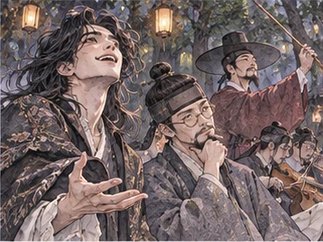
01 · 해 질 무렵 꽃밭에 누운 파우스트와 산 너머 골짜기
독일어 원문
1. Akt--Anmutige Gegend
Faust auf blumigen Rasen gebettet, ermüdet, unruhig,
schlafsuchend.
Dämmerung.
Geister-Kreis schwebend bewegt, anmutige kleine Gestalten.
한국어 번역
제1막 — 꽃이 핀 골짜기 파우스트가 꽃이 핀 풀밭에 누워 있다. 지치고 불안하여 잠을 청한다. 땅거미가 진다. 우아하고 작은 정령들이 공중에서 원을 그리며 움직인다.
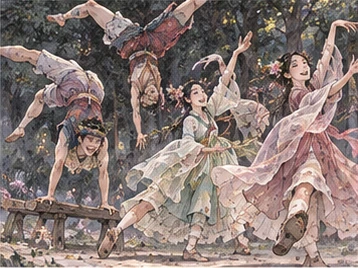
02 · 바람에 울리는 현 곁에서 노래하는 아리엘
독일어 원문
ARIEL.
Gesang von Aolsharfen begleitet.한국어 번역
아리엘. 바람 하프 소리에 맞춰 노래한다.
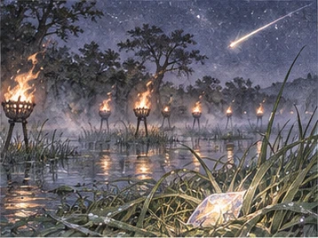
03 · 봄날 꽃비 속에서 사람들을 돌보는 작은 정령들
독일어 원문
Wenn der Blüten Frühlingsregen
Über alle schwebend sinkt,
Wenn der Felder grüner Segen
Allen Erdgebornen blinkt,
Kleiner Elfen Geistergröße
Eilet, wo sie helfen kann;
Ob er heilig, ob er böse,
Jammert sie der Unglücksmann.한국어 번역
봄꽃이 비처럼 모두에게 내려앉고, 푸른 들판이 땅에 태어난 모든 이에게 빛날 때, 작은 요정들은 너그러운 마음으로 도울 수 있는 곳에 달려간다. 거룩한 사람이든 악한 사람이든, 불행한 이를 가엾게 여긴다.
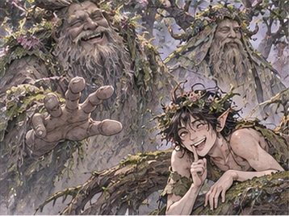
04 · 파우스트가 눈을 감은 채 얼굴을 찡그리고 정령들이 곁을 맴돈다
독일어 원문
Die ihr dies Haupt umschwebt im luft'gen Kreise,
Erzeigt euch hier nach edler Elfen Weise:
Besänftiget des Herzens grimmen Strauß,
Entfernt des Vorwurfs glühend bittre Pfeile,한국어 번역
이 머리 위를 공중에서 돌고 있는 너희여, 요정답게 너그러이 행동하여라. 마음속의 거센 싸움을 가라앉히고, 뜨겁고 쓰라린 자책의 화살을 거두어라. 그가 겪은 끔찍한 일에서 그의 마음을 깨끗이 씻어라.
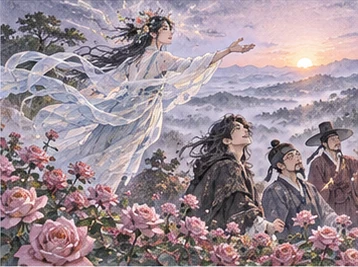
05 · 공중에서 원을 그려 밤을 지킬 준비를 하는 정령들
독일어 원문
Sein Innres reinigt von erlebtem Graus!
Vier sind die Pausen nächtiger Weile;한국어 번역
밤의 시간에는 네 차례의 쉼이 있다. 지체하지 말고 그 시간을 다정하게 채워라.
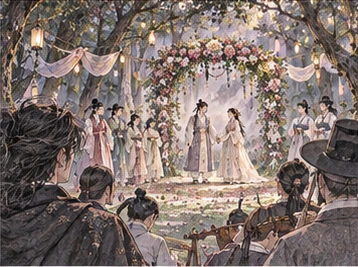
06 · 꽃 사이에서 파우스트의 이마에 이슬이 닿는 모습
독일어 원문
Nun ohne Säumen füllt sie freundlich aus!
Erst senkt sein Haupt aufs kühle Polster nieder,
Dann badet ihn im Tau aus Lethes Flut!
Gelenk sind bald die krampferstarrten Glieder,한국어 번역
먼저 그의 머리를 서늘한 베개에 내려놓고, 망각의 강 레테에서 가져온 이슬로 그를 씻어라. 기운을 되찾아 날이 밝기까지 쉬고 나면, 굳었던 팔다리도 곧 부드러워지리라.
07 · 정령들의 돌봄 속에서 얼굴이 편안해지는 파우스트
독일어 원문
Wenn er gestärkt dem Tag entgegen ruht.
Vollbringt der Elfen schönste Pflicht:
Gebt ihn zurück dem heiligen Licht!
CHOR
einzeln, zu zweien und vielen, abwechselnd und gesammelt.한국어 번역
요정의 가장 아름다운 의무를 다하여라. 그를 신성한 빛으로 돌려보내라. 합창. 한 명씩, 둘씩, 여럿이 번갈아, 또 함께 노래한다.
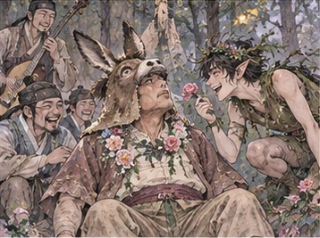
08 · 저녁 안개가 내려오는 잔잔한 호수와 산
독일어 원문
Wenn sich lau die Lüfte füllen
Um den grünumschränkten Plan,
Süße Düfte, Nebelhüllen
Senkt die Dämmerung heran,
Lispelt leise süßen Frieden,
Wiegt das Herz in Kindesruh
Und den Augen dieses Müden
Schließt des Tages Pforte zu.한국어 번역
푸른 풀밭 둘레에 포근한 공기가 차오르면 저녁 어스름이 달콤한 향기와 안개를 내려 보낸다. 달콤한 평화를 속삭이고, 마음을 어린아이처럼 고요히 달래어, 지친 이의 눈에 낮의 문을 닫아 준다.
09 · 별과 보름달을 그대로 비추는 밤 호수
독일어 원문
Nacht ist schon hereingesunken,
Schließt sich heilig Stern an Stern;
Große Lichter, kleine Funken
Glitzern nah und glänzen fern;
Glitzern hier im See sich spiegelnd,
Glänzen droben klarer Nacht;
Tiefsten Ruhens Glück besiegelnd
Herrscht des Mondes volle Pracht.한국어 번역
밤이 내려앉아 별과 별이 신성하게 이어진다. 큰 빛과 작은 불꽃이 가까이서 반짝이고 멀리서 빛난다. 호수에 비친 별빛과 맑은 밤하늘의 빛 위로 보름달의 광채가 가장 깊은 휴식을 지켜 준다.
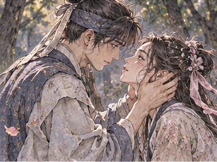
10 · 은빛이 감도는 새벽의 이삭과 푸른 언덕
독일어 원문
Schon verloschen sind die Stunden,
Hingeschwunden Schmerz und Glück;
Fühl' es vor! Du wirst gesunden;
Traue neuem Tagesblick!
Täler grünen, Hügel schwellen,
Buschen sich zu Schattenruh;
Und in schwanken Silberwellen
Wogt die Saat der Ernte zu.한국어 번역
지나간 시간은 사그라들고, 고통과 기쁨도 자취를 감췄다. 느껴 보라. 너는 회복할 것이다. 새날의 빛을 믿어라. 골짜기는 푸르게 빛나고 언덕이 솟아 있으며, 숲은 그늘 속에 쉰다. 곡식은 은빛 물결처럼 흔들리며 수확을 향해 무르익는다.
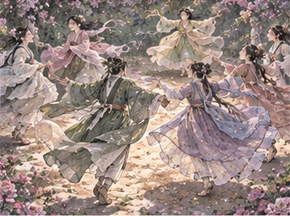
11 · 먼동이 틀 무렵 눈을 뜨기 시작하는 파우스트
독일어 원문
Wunsch um Wünsche zu erlangen
Schaue nach dem Glänze dort!
Leise bist du nur umfangen;
Schlaf ist Schale: wirf sie fort!
Säume nicht dich zu erdreisten,
Wenn die Menge zaudernd schweift;
Alles kann der Edle leisten,
Der versteht und rasch ergreift.한국어 번역
소원을 하나씩 이루고 싶다면 저기 빛나는 곳을 바라보라. 너를 감싼 것은 가볍다. 잠이라는 껍질을 벗어 던져라. 사람들이 망설이며 헤맬 때 과감히 나아가기를 주저하지 마라. 뜻을 알아보고 재빨리 붙잡는 고결한 이는 모든 것을 해낼 수 있다.
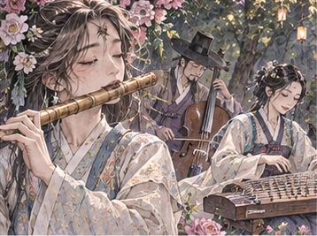
12 · 해가 밝아 오는 바위산을 보며 정령들에게 신호하는 아리엘
독일어 원문
Ungeheures Getöse verkündet das Herannahen der Sonne.
ARIEL.
Horchet! horcht dem Sturm der Hören!
Tönend wird für Geistesohren
Schon der neue Tag geboren.
Felsentore knarren rasselnd,
Phöbus' Räder rollen prasselnd,
Welch Getöse bringt das Licht!
Es trommetet, es posaunet,
Auge blinzt und Ohr erstaunet,한국어 번역
엄청난 굉음이 해가 가까워 오는 것을 알린다. 아리엘. 들어라, 높은 곳의 폭풍을 들어라. 정령들의 귀에는 새날이 소리와 함께 태어난다. 바위 문이 요란하게 삐걱이고, 태양신 포이보스의 수레바퀴가 요동치며 굴러온다. 빛이 얼마나 큰 굉음을 몰고 오는가! 북과 나팔이 울리고 눈은 깜빡이며 귀는 놀란다. 너무나 큰 소리여서 도리어 들리지 않는다.
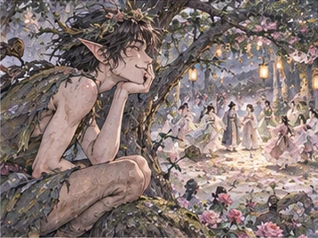
13 · 꽃과 바위틈, 잎 아래에 숨은 작은 정령들
독일어 원문
Unerhörtes hört sich nicht.
Schlüpfet zu den Blumenkronen,
Tiefer, tiefer, still zu wohnen,
In die Felsen, unters Laub!
Trifft es euch, so seid ihr taub.
한국어 번역
꽃송이 속으로 숨어라. 더 깊이, 더 깊이 들어가 조용히 있어라. 바위틈으로, 잎사귀 아래로! 그 소리를 그대로 맞으면 귀가 멀 것이다.
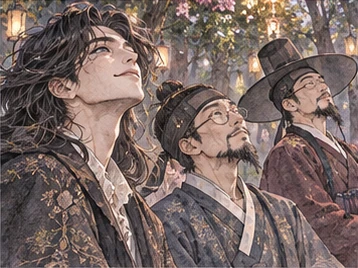
14 · 이슬 맺힌 골짜기에서 몸을 일으키는 파우스트
독일어 원문
FAUST.
Des Lebens Pulse schlagen frisch lebendig,
Ätherische Dämmerung milde zu begrüßen.
Du, Erde, warst auch diese Nacht beständig
Und atmest neu erquickt zu meinen Füßen,
Beginnest schon mit Lust mich zu umgeben.
Du regst und rührst ein kräftiges Beschließen,
Zum höchsten Dasein immer fortzustreben.--
In Dämmerschein liegt schon die Welt erschlossen,
Der Wald ertönt von tausendstimmigem Leben,
Tal aus Tal ein ist Nebelstreif ergossen;
Doch senkt sich Himmelsklarheit in die Tiefen,
Und Zweig' und Äste, frisch erquickt, entsprossen
Dem duft'gen Abgrund, wo versenkt sie schliefen.
Auch Färb' an Farbe klärt sich los vom Grunde,
Wo Blunr und Blatt von Zitterperle triefen--
Ein Paradies wird um mich her die Runde.한국어 번역
파우스트. 생명의 맥박이 싱싱하게 뛰며 맑고 부드러운 여명을 맞이한다. 대지여, 너는 이 밤에도 흔들림 없이 그 자리에 있었고 내 발밑에서 다시 기운을 얻어 숨 쉰다. 기쁨으로 나를 둘러싸고, 가장 높은 삶을 향해 계속 나아가겠다는 굳은 결심을 일깨운다. 여명 속에서 세계가 열리고 숲은 수많은 생명의 소리로 가득하다. 골짜기마다 안개가 흐르나 맑은 하늘빛이 깊은 곳까지 스며든다. 가지들이 향기로운 골짜기에서 잠을 깨듯 싱싱하게 모습을 드러낸다. 떨리는 이슬이 꽃과 잎에서 떨어지고, 빛이 비치자 색깔들이 하나씩 드러난다. 사방이 낙원처럼 변한다.
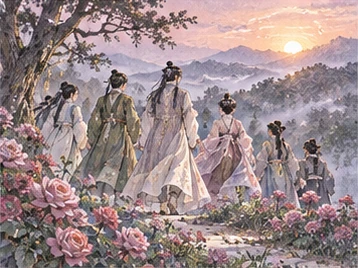
15 · 산봉우리 위로 뜬 태양을 소매로 가리는 파우스트
독일어 원문
Hinaufgeschaut!--Der Berge Gipfelriesen
Verkünden schon die feierlichste Stunde;
Sie dürfen früh des ewigen Lichts genießen,
Das später sich zu uns hernieder wendet.
Jetzt zu der Alpe grüngesenkten Wiesen
Wird neuer Glanz und Deutlichkeit gespendet,
Und stufenweis herab ist es gelungen--
Sie tritt hervor!--und, leider schon geblendet,
Kehr' ich mich weg, vom Augenschmerz durchdrungen.
한국어 번역
위를 보라! 거대한 산봉우리들이 가장 장엄한 시간을 알린다. 저 높은 곳이 영원한 빛을 먼저 받으니, 빛은 뒤이어 우리에게 내려온다. 이제 산비탈의 푸른 풀밭도 빛을 받아 또렷해진다. 빛이 한 층씩 아래로 내려와 드디어 해가 나타난다! 그러나 나는 곧 눈이 부셔, 눈을 찌르는 통증에 몸을 돌린다.
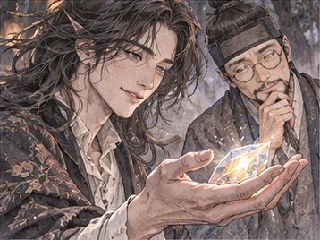
16 · 해를 등진 파우스트가 절벽 폭포의 무지개를 바라본다
독일어 원문
So ist es also, wenn ein sehnend Hoffen
Dem höchsten Wunsch sich traulich zugerungen,
Erfüllungspforten findet flügeloffen;
Nun aber bricht aus jenen ewigen Gründen
Ein Flammenübermaß--wir stehn betroffen.
Des Lebens Fackel wollten wir entzünden,
Ein Feuermeer umschlingt uns, welch ein Feuer!
Ist's Lieb', ist's Haß, die glühend uns umwinden,
Mit Schmerz-und Freuden wechselnd ungeheuer,
So daß wir wieder nach der Erde blicken,
Zu bergen uns in jugendlichstem Schleier?
So bleibe denn die Sonne mir im Rücken!
Der Wassersturz, das Felsenriff durchbrausend,
Ihn schau' ich an mit wachsendem Entzücken.
Von Sturz zu Sturze wälzt er jetzt in tausend,
Dann abertausend Strömen sich ergießend,
Hoch in die Lüfte Schaum an Schäume sausend.
Allein wie herrlich diesem Sturm entsprießend.
Wölbt sich des bunten Bogens Wechseldauer,
Bald rein gezeichnet, bald in Luft zerfließend,
Umher verbreitend duftig kühle Schauer.
Der spiegelt ab das menschliche Bestreben.
Ihm sinne nach und du begreifst genauer:
Am farbigen Abglanz haben wir das Leben.
한국어 번역
간절한 소원을 이루려고 애쓴 끝에 그 문이 활짝 열렸을 때도 이와 같다. 영원한 깊은 곳에서 감당 못 할 불길이 터져 나와 우리는 놀라 멈춰 선다. 삶의 횃불을 켜려 했는데 불바다가 우리를 둘러싼다. 사랑인지 증오인지 알 수 없는 뜨거운 힘이 기쁨과 고통을 번갈아 안기니, 우리는 다시 땅을 바라보며 그 싱그러운 장막에 숨으려 한다. 그러니 해는 내 등 뒤에 있어라. 바위 절벽을 가르며 쏟아지는 폭포를 나는 갈수록 기쁘게 바라본다. 물이 단을 타고 굴러 천 줄기, 또 수만 줄기로 갈라져 쏟아지고 물보라가 공중으로 날아오른다. 그 물살 위에 온갖 색의 무지개가 아름답게 걸려, 또렷해졌다가 허공에 녹아들며 시원하고 향긋한 물안개를 퍼뜨린다. 그것은 인간의 노력을 비춘다. 깊이 생각하면 더 잘 알게 되리라. 우리는 빛이 색으로 비친 곳에서 삶을 얻는다.
황제의 궁정

01 · 황제를 기다리는 대신들과 나팔을 부는 시종
독일어 원문
KAISERLICHE PFALZ
SAAL DES THRONES
Staatsrat in Erwartung des Kaisers.
Trompeten.
한국어 번역
황제의 궁정. 알현실. 국정을 의논하는 대신들이 황제를 기다린다. 나팔 소리.

02 · 금빛 왕좌에 앉은 황제와 오른편의 점성술사
독일어 원문
Hofgesinde aller Art, prächtig gekleidet, tritt vor.
Der Kaiser gelangt auf den Thron, zu seiner Rechten
der Astrolog.
한국어 번역
온갖 궁정 사람들이 화려하게 차려입고 앞으로 나온다. 황제가 왕좌에 오르고, 오른편에는 점성술사가 자리한다.

03 · 왕좌 옆의 빈 의자를 가리키는 황제
독일어 원문
KAISER.
Ich grüße die Getreuen, Lieben,
Versammelt aus der Näh und Weite.--
Den Weisen seh' ich mir zur Seite,
Allein wo ist der Narr geblieben?
한국어 번역
황제. 가까운 곳과 먼 곳에서 모인 충직하고 사랑하는 이들에게 인사를 전한다. 내 곁에 현자는 보이는데, 광대는 어디로 갔느냐?

04 · 계단에서 쓰러진 광대를 시종들이 들어 옮긴다
독일어 원문
JUNKER.
Gleich hinter deiner Mantelschleppe
Stürzt' er zusammen auf der Treppe,
Man trug hinweg das Fettgewicht;
Tot oder trunken, weiß man nicht.
한국어 번역
젊은 궁정 신하. 폐하의 망토 자락 바로 뒤에서 그가 계단에 쓰러졌습니다. 그 육중한 몸을 사람들이 들어 옮겼습니다. 죽었는지 술에 취했는지는 모릅니다.

05 · 두 번째 궁정 신하가 멀리 나타난 새 광대를 가리킨다
독일어 원문
ZWEITER JUNKER.
Sogleich mit wunderbarer Schnelle
Drängt sich ein andrer an die Stelle.
Gar köstlich ist er aufgeputzt,한국어 번역
두 번째 젊은 궁정 신하. 곧바로 다른 자가 놀라울 정도로 빠르게 그 자리를 비집고 들어옵니다. 옷차림은 무척 화려하나 우스꽝스러워 다들 멈칫합니다.

06 · 근위병들의 교차한 도끼창 앞으로 몸을 숙이는 메피스토
독일어 원문
Doch fratzenhaft, daß jeder stutzt.
Die Wache hält ihm an der Schwelle
Kreuzweis die Hellebarden vor--
Da ist er doch, der kühne Tor!
한국어 번역
문턱에서 경비병들이 도끼창을 엇갈려 그를 막습니다. 그런데도 저기 있군요, 저 대담한 광대가!

07 · 왕좌 앞에 한쪽 무릎을 꿇고 황제를 올려다보는 메피스토
독일어 원문
MEPHISTOPHELES:
am Throne kniend.
Was ist verwünscht und stets willkommen?
Was ist ersehnt und stets verjagt?한국어 번역
메피스토가 왕좌 앞에 무릎을 꿇는다. 저주받으면서도 늘 환영받는 것은 무엇입니까? 기다려지면서도 늘 쫓겨나는 것은 무엇입니까?
08 · 미소를 띤 채 수수께끼를 이어 가는 메피스토의 얼굴
독일어 원문
Was immerfort in Schutz genommen?
Was hart gescholten und verklagt?
Wen darfst du nicht herbeiberufen?
Wen höret jeder gern genannt?
Was naht sich deines Thrones Stufen?
Was hat sich selbst hinweggebannt?한국어 번역
늘 두둔받으면서도 심하게 꾸짖고 고발하는 것은 무엇입니까? 직접 불러들일 수는 없어도 누구나 그 이름을 듣기 좋아하는 이는 누구입니까? 왕좌의 계단에 다가온 것은 무엇입니까? 스스로 자취를 감춘 것은 무엇입니까?

09 · 황제가 손짓해 메피스토에게 옆자리를 내준다
독일어 원문
KAISER:
Für diesmal spare deine Worte!
Hier sind die Rätsel nicht am Orte,
Das ist die Sache dieser Herrn.--
Da löse du! das hört' ich gern.
Mein alter Narr ging, fürcht' ich, weit ins Weite;
Nimm seinen Platz und komm an meine Seite.한국어 번역
황제. 이번엔 말 좀 아껴라! 여기서 수수께끼를 낼 때가 아니다. 그건 이분들이 다룰 일이니, 네가 한번 풀어 봐라! 그 답은 듣고 싶구나. 예전 광대는 아무래도 멀리 떠난 듯하다. 네가 그 자리를 맡고 내 곁으로 와라.

10 · 새 광대를 바라보며 귀엣말을 나누는 신하들
독일어 원문
GEMURMEL DER MENGE:
Ein neuer Narr--Zu neuer Pein--
Wo kommt er her?--Wie kam er ein?--
Der alte fiel--Der hat vertan--
Es war ein Faß--Nun ist's ein Span--한국어 번역
사람들이 웅성거린다. 새 광대라니, 새 골칫거리가 되겠군. 어디서 온 거지? 어떻게 들어왔어? 옛 광대는 쓰러졌고, 이제 끝장이군. 전에는 술통이더니 이번에는 나뭇조각이네.
11 · 가면을 든 채 양옆의 대신들을 바라보는 황제
독일어 원문
KAISER:
Und also, ihr Getreuen, Lieben,
Willkommen aus der Näh' und Ferne!
Ihr sammelt euch mit günstigem Sterne,
Da droben ist uns Glück und Heil geschrieben.
Doch sagt, warum in diesen Tagen,
Wo wir der Sorgen uns entschlagen,
Schönbärte mummenschänzlich tragen
Und Heitres nur genießen wollten,
Warum wir uns ratschlagend quälen sollten?
Doch weil ihr meint, es ging' nicht anders an,
Geschehen ist's, so sei's getan.한국어 번역
황제. 가까이서도 멀리서도 온 충직하고 사랑하는 이들을 환영한다. 길한 별 아래 모였으니 하늘에는 행운과 복이 적혀 있다. 그런데 근심을 내려놓고 우스꽝스러운 가면을 쓰고 즐기려던 이때, 어째서 머리를 싸매고 의논해야 하는가? 달리 도리가 없다고들 하니, 기왕 모인 김에 해 보자.
12 · 황제 앞에서 가슴에 손을 얹고 고개 숙이는 재상
독일어 원문
KANZLER:
Die höchste Tugend, wie ein Heiligenschein,
Umgibt des Kaisers Haupt; nur er allein
Vermag sie gültig auszuüben:
Gerechtigkeit!--Was alle Menschen lieben,
Was alle fordern, wünschen, schwer entbehren,
Es liegt an ihm, dem Volk es zu gewähren.
Doch ach! Was hilft dem Menschengeist Verstand,
Dem Herzen Güte, Willigkeit der Hand,
Wenn's fieberhaft durchaus im Staate wütet
Und übel sich in übeln überbrütet?한국어 번역
재상. 가장 높은 덕목이 성스러운 빛처럼 황제의 머리 위를 감쌉니다. 오직 황제만이 그것을 제대로 펼칠 수 있습니다. 바로 정의입니다. 모두가 사랑하고 요구하며 바라 마지않는 정의를 백성에게 내리는 일은 폐하에게 달려 있습니다. 그러나 나라 전체가 열병처럼 들끓고 잘못이 또 다른 잘못을 낳는다면, 지혜와 선한 마음과 기꺼이 일하려는 손이 무슨 소용이겠습니까?

13 · 양 떼를 몰고 가는 도둑과 성당의 성물을 빼앗는 사람들
독일어 원문
Wer schaut hinab von diesem hohen Raum
Ins weite Reich, ihm scheint's ein schwerer Traum,
Wo Mißgestalt in Mißgestalten schaltet,
Das Ungesetz gesetzlich überwaltet
Und eine Welt des Irrtums sich entfaltet.
Der raubt sich Herden, der ein Weib,
Kelch, Kreuz und Leuchter vom Altare,
Berühmt sich dessen manche Jahre
Mit heiler Haut, mit unverletztem Leib.한국어 번역
이 높은 곳에서 넓은 제국을 내려다보면 무거운 악몽과도 같습니다. 온갖 흉측한 일이 판을 치고, 무법이 법인 양 군림하며, 잘못된 세상이 펼쳐집니다. 누구는 가축 떼를, 누구는 여인을, 또 누구는 제단에서 성배와 십자가와 촛대를 빼앗습니다. 그러고도 다친 곳 하나 없이 몇 해씩 그 일을 자랑합니다.
14 · 높은 재판석 아래에서 서로의 억울함을 호소하는 사람들
독일어 원문
Jetzt drängen Kläger sich zur Halle,
Der Richter prunkt auf hohem Pfühl,
Indessen wogt in grimmigem Schwalle
Des Aufruhrs wachsendes Gewühl.
Der darf auf Schand' und Frevel pochen,
Der auf Mitschuldigste sich stützt,
Und: Schuldig! hörst du ausgesprochen,
Wo Unschuld nur sich selber schützt.한국어 번역
이제 억울함을 호소하는 이들이 법정에 몰려듭니다. 재판관은 높은 자리에 앉아 위세를 부리고, 그 사이 격렬한 소요는 점점 커집니다. 누구는 저지른 파렴치한 짓으로 큰소리치고, 누구는 함께 죄를 지은 자들에게 기대지요. 죄 없는 사람이 자신을 지키려는 것뿐인 자리에서 ‘유죄!’라는 소리가 들립니다.

15 · 재판석 아래에서 오가는 뇌물 주머니
독일어 원문
So will sich alle Welt zerstückeln,
Vernichtigen, was sich gebührt;
Wie soll sich da der Sinn entwickeln,
Der einzig uns zum Rechten führt?
Zuletzt ein wohlgesinnter Mann
Neigt sich dem Schmeichler, dem Bestecher,
Ein Richter, der nicht strafen kann,
Gesellt sich endlich zum Verbrecher.한국어 번역
그리하여 세상은 갈기갈기 찢어지고 지켜야 할 것은 무너집니다. 우리를 올바른 길로 이끌 분별이 어찌 자라겠습니까? 마침내 뜻이 선한 사람도 아첨꾼과 뇌물 주는 자에게 넘어가고, 죄에 벌을 줄 수 없는 재판관은 끝내 범죄자의 편이 됩니다.
16 · 왕좌 앞에서 결단을 요구하는 재상과 그 말을 듣는 황제
독일어 원문
Ich malte schwarz, doch dichtern Flor
Zög' ich dem Bilde lieber vor.
Entschlüsse sind nicht zu vermeiden;
Wenn alle schädigen, alle leiden,
Geht selbst die Majestät zu Raub.한국어 번역
어둡게 그려 말씀드렸습니다만, 차라리 더 두꺼운 천으로 이 그림을 덮어 버리고 싶습니다. 이제 결단을 피할 수 없습니다. 모두가 서로에게 해를 끼쳐 모두가 고통받으면 황제의 권위조차 약탈당합니다.
대신들의 보고와 메피스토의 제안

01 · 갑옷 차림으로 황제에게 보고하는 군 총사령관
독일어 원문
HEERMEISTER:
Wie tobt's in diesen wilden Tagen!
Ein jeder schlägt und wird erschlagen,
Und fürs Kommando bleibt man taub.한국어 번역
총사령관. 이 어지러운 나날에 얼마나 거칠게 날뛰는지요! 저마다 남을 치고 또 쓰러지며, 명령에는 귀를 닫습니다.

02 · 성벽 안의 도시와 바위산 위의 기사 성채
독일어 원문
Der Bürger hinter seinen Mauern,
Der Ritter auf dem Felsennest
Verschwuren sich, uns auszudauern,
Und halten ihre Kräfte fest.한국어 번역
시민은 성벽 뒤에, 기사는 바위 위 요새에 틀어박혔습니다. 우리보다 오래 버티겠다고 굳게 맹세하고 제 힘을 비축합니다.
03 · 손을 내밀며 밀린 봉급을 요구하는 용병
독일어 원문
Der Mietsoldat wird ungeduldig,
Mit Ungestüm verlangt er seinen Lohn,
Und wären wir ihm nichts mehr schuldig,
Er liefe ganz und gar davon.한국어 번역
용병은 참을성을 잃고 거칠게 봉급을 요구합니다. 우리가 줄 돈이 남아 있지 않다면 벌써 아주 달아났을 것입니다.

04 · 약탈당한 마을 위로 등을 돌린 왕들의 모습이 겹쳐 보인다
독일어 원문
Verbiete wer, was alle wollten,
Der hat ins Wespennest gestört;
Das Reich, das sie beschützen sollten,
Es liegt geplündert und verheert.
Man läßt ihr Toben wütend hausen,
Schon ist die halbe Welt vertan;
Es sind noch Könige da draußen,
Doch keiner denkt, es ging' ihn irgend an.
한국어 번역
모두가 하고 싶어 하는 일을 누가 금하기라도 하면 벌집을 건드린 꼴입니다. 그들이 지켜야 할 제국은 약탈당하고 황폐해졌습니다. 그들이 마음껏 난동을 부리게 내버려 두니 벌써 세상의 절반이 망했습니다. 밖에는 아직 왕들이 있지만 누구도 자기 일이라고 생각하지 않습니다.

05 · 재무관 앞에 펼쳐진 텅 빈 장부와 메마른 땅의 이미지
독일어 원문
SCHATZMEISTER:
Wer wird auf Bundsgenossen pochen!
Subsidien, die man uns versprochen,
Wie Röhrenwasser bleiben aus.한국어 번역
재무관. 누가 동맹국을 믿겠습니까! 약속한 지원금은 관에서 나와야 할 물처럼 끊겨 버렸습니다.
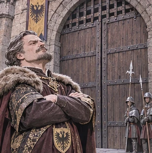
06 · 굳게 닫힌 문 앞에서 팔짱을 낀 지방 영주
독일어 원문
Auch, Herr, in deinen weiten Staaten
An wen ist der Besitz geraten?
Wohin man kommt, da hält ein Neuer Haus,
Und unabhängig will er leben,
Zusehen muß man, wie er's treibt;
Wir haben so viel Rechte hingegeben,
Daß uns auf nichts ein Recht mehr übrigbleibt.한국어 번역
폐하의 드넓은 영토에서도 재산이 누구 손에 넘어갔습니까? 가는 곳마다 새 주인이 들어앉아 제멋대로 독립해 살려 합니다. 우리는 그들이 하는 짓을 지켜봐야만 합니다. 권리를 너무 많이 내주어 이제 우리에게는 아무 권리도 남지 않았습니다.

07 · 황제 앞에서 서로 고개를 돌린 두 파벌의 귀족
독일어 원문
Auch auf Parteien, wie sie heißen,
Ist heutzutage kein Verlaß;
Sie mögen schelten oder preisen,
Gleichgültig wurden Lieb' und Haß.
Die Ghibellinen wie die Guelfen
Verbergen sich, um auszuruhn;
Wer jetzt will seinem Nachbar helfen?
Ein jeder hat für sich zu tun.한국어 번역
오늘날에는 이름이 무엇이든 어느 파벌도 믿을 수 없습니다. 그들이 비난하든 칭찬하든, 미워하든 좋아하든 이제 다 소용없습니다. 기벨린파도 겔프파도 숨어 쉽니다. 지금 누가 이웃을 돕겠습니까? 저마다 제 일로 바쁩니다.
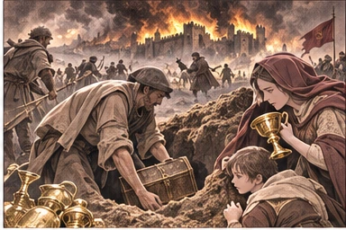
08 · 무늬는 화려하지만 속이 텅 빈 국고 상자
독일어 원문
Die Goldespforten sind verrammelt,
Ein jeder kratzt und scharrt und sammelt,
Und unsre Kassen bleiben leer.
한국어 번역
금고 문은 단단히 막혔습니다. 저마다 긁고 파서 자기 몫을 모으는데, 우리 금고는 비어 있습니다.
09 · 고기와 새가 쌓인 궁정 부엌을 배경으로 고개 숙인 궁정 살림을 맡은 대신
독일어 원문
MARSCHALK:
Welch Unheil muß auch ich erfahren!
Wir wollen alle Tage sparen
Und brauchen alle Tage mehr,
Und täglich wächst mir neue Pein.
Den Köchen tut kein Mangel wehe;
Wildschweine, Hirsche, Hasen, Rehe,
Welschhühner, Hühner, Gäns' und Enten,
Die Deputate, sichre Renten,
Sie gehen noch so ziemlich ein.한국어 번역
궁정 살림을 맡은 대신. 제게도 재앙입니다! 날마다 아끼려 하지만 날마다 더 많이 필요해 근심이 늘어납니다. 요리사들에게는 부족한 것이 없습니다. 멧돼지, 사슴, 산토끼, 노루, 칠면조, 닭, 거위, 오리, 정기 현물과 확실한 수입은 아직 그럭저럭 들어옵니다.

10 · 포도주를 다 마시고 남은 술통이 늘어선 지하 저장고
독일어 원문
Jedoch am Ende fehlt's an Wein.
Wenn sonst im Keller Faß an Faß sich häufte,
Der besten Berg' und Jahresläufte,
So schlürft unendliches Gesäufte
Der edlen Herrn den letzten Tropfen aus.한국어 번역
하지만 끝내 포도주가 모자랍니다. 전에는 좋은 산지에서 좋은 해에 난 술을 통마다 지하실에 쌓아 두었건만, 귀족들의 끝없는 술판이 마지막 한 방울까지 마셔 버립니다.
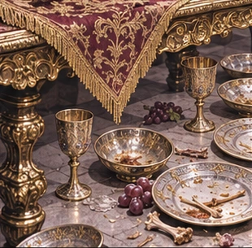
11 · 엎어진 잔과 음식이 어지럽게 남은 귀족들의 연회상
독일어 원문
Der Stadtrat muß sein Lager auch verzapfen,
Man greift zu Humpen, greift zu Napfen,
Und unterm Tische liegt der Schmaus.한국어 번역
시의회도 자기 저장고의 술을 내놓아야 합니다. 사람들은 큰 잔과 사발을 집어 들고, 잔칫상 음식은 탁자 아래에 떨어집니다.
12 · 담보 문서와 베개, 뜯긴 빵 한 덩이
독일어 원문
Nun soll ich zahlen, alle lohnen;
Der Jude wird mich nicht verschonen,
Der schafft Antizipationen,
Die speisen Jahr um Jahr voraus.
Die Schweine kommen nicht zu Fette,
Verpfändet ist der Pfühl im Bette,
Und auf den Tisch kommt vorgegessen Brot.
한국어 번역
이제 값을 치르고 품삯도 모두 줘야 합니다. 돈을 빌려준 유대인 채권자는 봐주지 않고, 앞으로 들어올 수입을 당겨 잡아 우리가 해마다 미리 써 버리게 합니다. 돼지는 살이 찌기도 전에 쓰이고, 침대의 베개는 담보로 잡혔으며, 식탁에는 이미 당겨 쓴 몫으로 마련한 빵이 오릅니다.

13 · 왕좌 옆 새 광대에게 고개를 돌리는 황제
독일어 원문
KAISER:
Sag, weißt du Narr nicht auch noch eine Not?
한국어 번역
황제. 말해 보아라, 광대야. 너도 무슨 걱정거리를 하나 더 아느냐?

14 · 미소를 띠고 황제와 대신들을 치켜세우는 메피스토
독일어 원문
MEPHISTOPHELES:
Ich? Keineswegs. Den Glanz umher zu schauen,
Dich und die Deinen!--Mangelte Vertrauen,
Wo Majestät unweigerlich gebeut,
Bereite Macht Feindseliges zerstreut?
Wo guter Wille, kräftig durch Verstand,
Und Tätigkeit, vielfältige, zur Hand?
Was könnte da zum Unheil sich vereinen,
Zur Finsternis, wo solche Sterne scheinen?
한국어 번역
메피스토. 제가요? 전혀요. 주위를 보십시오, 이 화려함과 폐하와 신하들을요! 황제께서 거침없이 명하고 군대가 적의를 물리치며, 선의에 지혜가 더해지고 온갖 능력이 제 몫을 하는 곳에서 어찌 믿음이 부족하겠습니까? 이런 별들이 빛나는데 무슨 불행이 모이고 어둠이 생기겠습니까?

15 · 메피스토를 경계하며 귀엣말을 주고받는 대신들
독일어 원문
GEMURMEL:
Das ist ein Schalk--Der's wohl versteht--
Er lügt sich ein--So lang' es geht--
Ich weiß schon--Was dahinter steckt--
Und was denn weiter?--Ein Projekt--
한국어 번역
웅성거림. 능청스러운 자군. 잘 아는 모양이지. 거짓말로 제자리를 얻는군. 통할 때까진 그러겠지. 속셈은 벌써 알겠어. 그다음 뭔데? 무슨 계획이 있겠지.
16 · 산속 금맥과 옛 건물 터를 가리키는 듯 손을 뻗는 메피스토
독일어 원문
MEPHISTOPHELES:
Wo fehlt's nicht irgendwo auf dieser Welt?
Dem dies, dem das, hier aber fehlt das Geld.
Vom Estrich zwar ist es nicht aufzuraffen;
Doch Weisheit weiß das Tiefste herzuschaffen.
In Bergesadern, Mauergründen
Ist Gold gemünzt und ungemünzt zu finden,
Und fragt ihr mich, wer es zutage schafft:
Begabten Manns Natur--und Geisteskraft.한국어 번역
메피스토. 세상 어디에 부족한 것이 없겠습니까? 누구는 이것, 누구는 저것이 부족하지만 여기서는 돈이 부족합니다. 바닥에서 주울 수는 없어도 지혜가 있으면 가장 깊은 곳에서도 가져올 수 있습니다. 산의 광맥과 담 밑의 기초에는 주화로 찍은 금도, 찍지 않은 금도 있습니다. 누가 그것을 세상에 꺼내 놓느냐고요? 재능 있는 사람의 타고난 힘과 정신의 힘이지요.